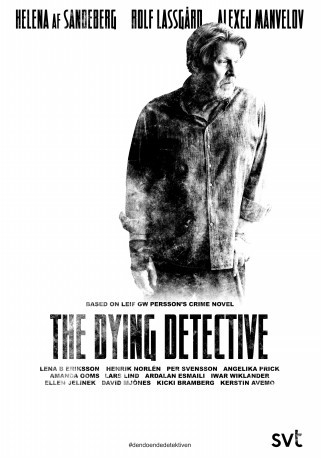

")
 
 IMDB-Wertung: 7.0 / 10
IMDB-Wertung: 7.0 / 10  Metascore:
Metascore: 
Stockholm, vor einer Würstchenbude: Der pensionierte Lars Martin Johansson (Rolf Lassgård), legendärer Mordermittler und bei seinen ehemaligen Kollegen als der Mann bekannt, der um die Ecke denken kann, erleidet einen Schlaganfall. Gerade noch rechtzeitig wird er in ein Krankenhaus eingeliefert. Als er dort drei Tage später wieder aus dem Koma erwacht, rechtsseitig gelähmt, steht eines fest: von Johannson, wie man ihn einst kannte, ist nicht mehr viel übrig geblieben. Seine Lebensgeister werden erst wieder geweckt, als ihm seine behandelnde Ärztin von einem brutalen Mord an einem kleinen Mädchen erzählt, der 30 Jahre zurückliegt und nie aufgeklärt wurde. Vom Krankenbett aus beginnt Johansson mit den Ermittlungen. Er will Gerechtigkeit, und er ahnt, dass das womöglich sein letzter Fall sein wird.Der Dreiteiler basiert auf dem gleichnamigen Krimi des schwedischen Bestsellerautors Leif GW Persson aus seiner preisgekrönten Trilogie über den Fall des Wohlfahrtsstaats. Die Verfilmungen der anderen Teile der Trilogie heißen „Tod eines Pilgers“ und „Der vierte Mann„.
Jahr: 2018
Dauer: 58 Minuten
FSK:
Land: Schweden Studio: SVTTonspuren: - , - ,
Untertitel: Deutsch,
Auflösung: 720p (1280x544) Größe: 1167 MB
Genre: Thriller, Drama, Mystery, TV-Serie
Regisseur: Kristian Petri
Drehbuch: Sara Heldt, Leif G.W. Persson
Soundtrack:
Darsteller:
 Rolf Lassgård als LMJ, 3 episodes, 2018
Rolf Lassgård als LMJ, 3 episodes, 2018 Helena Af Sandeberg als Eriksson, 3 episodes, 2018
Helena Af Sandeberg als Eriksson, 3 episodes, 2018 Henrik Norlén als Lewin, 2 episodes, 2018
Henrik Norlén als Lewin, 2 episodes, 2018Datei: X:\HD-Serien\Fall des Wohlfahrtsstaates\3 Sterbende Detektiv\Der sterbende Detektiv - S01E01.mkv seit 03.04.2019
Festplatte: HD Serien(A-H)
 Es gibt insgesamt 182 Filme in der Gruppe 'HD-Serien'
Es gibt insgesamt 182 Filme in der Gruppe 'HD-Serien'